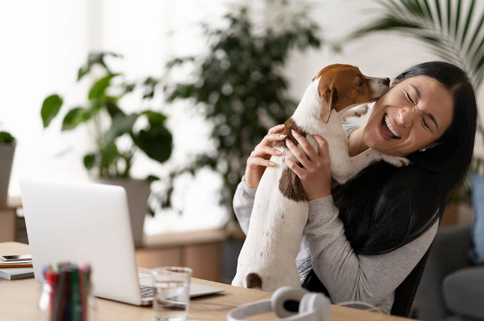

About Us
We are a team of dedicated pet lovers, striving to create a nurturing environment where pets feel loved and cherished.
At PetWash, our journey began with a shared passion for animals and a deep understanding of the special bond between pets and their owners. Founded by a group of dedicated pet lovers, we set out on a mission to create a haven where pets could experience the utmost care, comfort, and love during their bath and grooming sessions. We believe that every pet deserves to feel cherished and pampered, just like a member of the family.
From the moment you walk through our doors, you'll sense the warmth and genuine affection that permeates our pet-friendly atmosphere. Our team of trained professionals is committed to providing a nurturing environment, ensuring that each furry guest feels safe and relaxed throughout their entire visit. We understand that bath time can be a stressful experience for some pets, which is why we go above and beyond to make the process enjoyable, using gentle techniques and positive reinforcement.
At PetWash, we take pride in offering a wide range of services that cater to the unique needs of every pet. From luxurious baths using high-quality, pet-safe products to expert grooming and spa-like treatments, we aim to make each pet look and feel their best. Whether it's a small, playful puppy or a wise, senior companion, we provide personalized attention to each furry friend, addressing their individual requirements with care and expertise.